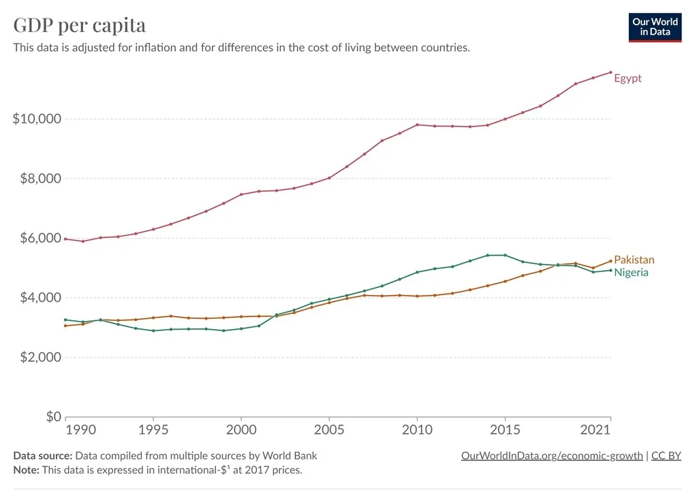
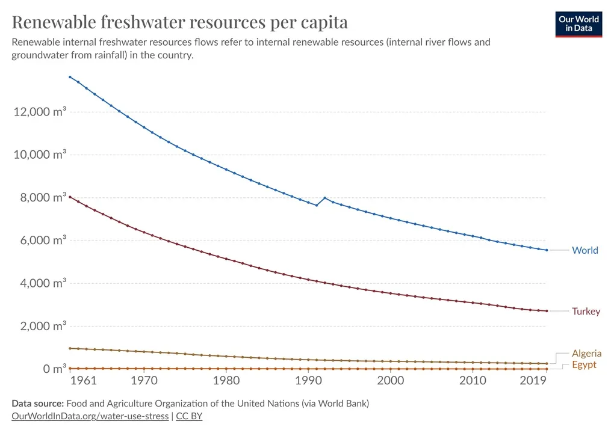
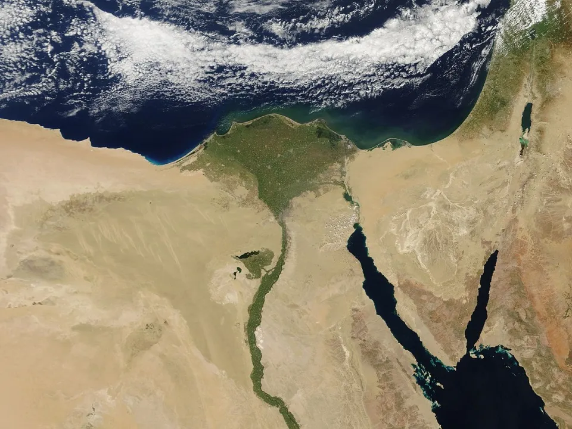
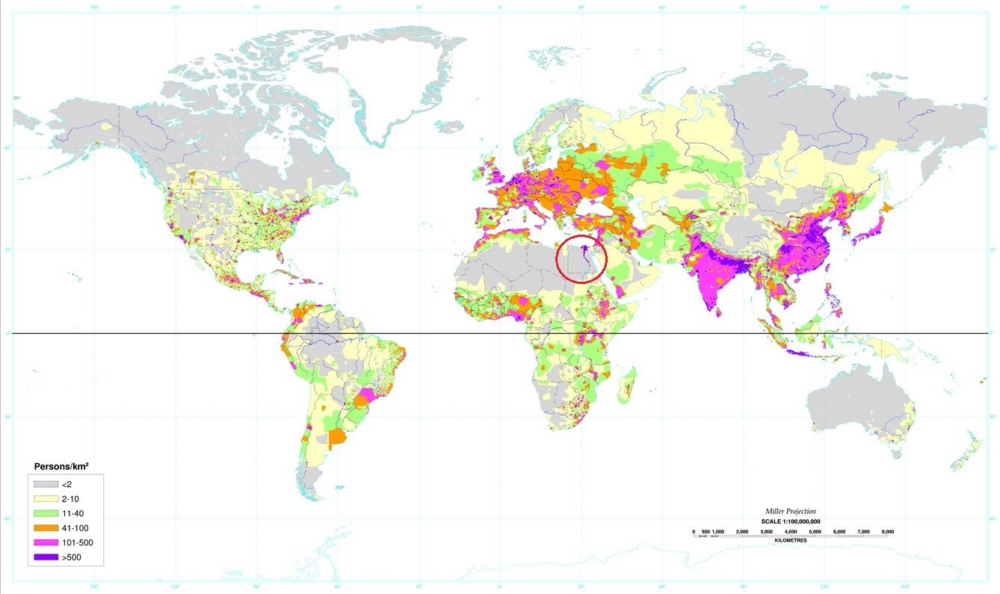

19 Egypt
Tooze
Middle East Eye reports:
Israel is proposing writing off a significant chunk of Egypt’s international debts through the World Bank to entice the cash-strapped Abdel Fattah el-Sisi government to open its doors for displaced Palestinians, according to the Israeli Ynet website.
Egypt is currently mired in a debt crisis, ranking second only to Ukraine among countries most likely to default in debt payments.
The state is haemorrhaging half its revenue in interest payments and is reliant on loans from the IMF and wealthy Gulf states, limiting its ability to contradict US foreign policy.
However, it remains unclear whether Israel wields adequate influence at the World Bank to write off Egypt’s international debts.
Debt forgiveness has previously been leveraged by the United States to bring Egypt in line with its foreign policy. In 1991, the US and its allies forgave half of Egypt’s debt in exchange for its involvement in the anti-Iraq coalition during the second Gulf War…
This comes shortly after an Israeli intelligence ministry document was leaked to the Israeli news site Calcalist; it detailed purported plans for the forced transfer of Palestinians in Gaza to the Sinai peninsula.
The Israeli site +972 (named after the shared international dialling code for Israelis and Palestinians, a small hint at possibilities and necessities of shared futures) has this report:
The Israeli Ministry of Intelligence is recommending the forcible and permanent transfer of the Gaza Strip’s 2.2 million Palestinian residents to Egypt’s Sinai Peninsula, according to an official document revealed in full for the first time by +972’s partner site Local Call yesterday. The 10-page document, dated Oct. 13, 2023, bears the logo of the Intelligence Ministry — a small governmental body that produces policy research and shares its proposals with intelligence agencies, the army, and other ministries. It assesses three options regarding the future of the Palestinians in the Gaza Strip in the framework of the current war, and recommends a full population transfer as its preferred course of action. It also calls on Israel to enlist the international community in support of this endeavor. The document, whose authenticity was confirmed by the ministry, has been translated into English in full here on +972. The existence of the document does not necessarily indicate that its recommendations are being considered by Israel’s defense establishment. Despite its name, the Intelligence Ministry is not directly responsible for any intelligence body, but rather independently prepares studies and policy papers that are distributed to the Israeli government and security agencies for review, but are not binding. The ministry’s annual budget is NIS 25 million and its influence is considered relatively small. It is currently headed by Gila Gamliel, a member of Prime Minister Benjamin Netanyahu’s Likud Party.
However, the fact that an Israeli government ministry has prepared such a detailed proposal amid a large-scale military offensive on the Gaza Strip, following Hamas’ deadly assault and massacres in southern Israeli communities on Oct. 7, reflects how the idea of forced population transfer is being raised to the level of official policy discussions.
What of Egypt’s position? It is explored brilliantly in this analysis by Nihal El Aasar, which connects a possible refugee influx to Egyptian domestic concerns:
The ongoing crackdown on dissent and public displays of solidarity also reflects a deep anxiety in the Egyptian government regarding the potential influx of Palestinian refugees—an influx which fundamentally would change the domestic make-up of postcolonial Egypt and the broader dynamics in the region. If Palestinians settled in Sinai continued resistance operations (or, likely, even if they didn’t), their presence would give Israel reason to attack Sinai in “self-defense,” at a time when Egypt is already struggling to assert sovereignty on the North of Sinai due to the activities of Islamist militias.
There is also the possibility that the (practically guaranteed) entry of militants alongside other refugees, combined with the popularity of the Palestinian cause amongst Egyptians, could influence a number of Egyptian citizens to join the resistance movements. Furthermore, Palestinians would instantly become the majority population in the Sinai, further undermining Egyptian sovereignty in the area. It is not an exaggeration to think that the expulsion of Gaza into the Sinai could precipitate Egypt’s own version of Black September, the 10-month long civil war in the 1970s in Jordan between Jordanian forces and Palestinian militants.
Smith
The encouraging thing about Egypt’s middle-income status is that it isn’t based on exports. Egypt doesn’t sell that much stuff to the outside world at all, actually; its exports are only 15% of GDP, which is quite low compared to most countries. Its biggest export is actually oil, but the total amount of oil it sells outside its borders is quite low — only about as much as Vietnam, which has a similar population. Egypt definitely isn’t a petrostate, by any stretch of the imagination.
Egypt’s income must come from the domestic economy — from Egyptians making goods and providing services for each other. The fact that the country has managed to reach middle-income status based almost entirely on its internal economy is an encouraging sign — it means that basic economic mechanisms are functioning with a reasonable amount of efficiency. Compare Egypt to true basket cases like Nigeria or Pakistan.

Although Egypt’s living standards are below the world average, it’s not actually that poor — it’s at about the same level as South Africa or Indonesia. In other words, it’s a solidly middle-income country.
Egypt has 113 million people; combine that with a middling level of income and you have a fairly substantial potential market.
At around 75%, Egypt’s literacy rate is pretty low by modern standards.
Egypt scores poorly on corruption measures, although it’s far from being one of the worst. The key problem is that the military owns or controls many of the country’s businesses. This is similar to Indonesia’s military in the late 20th century, or Iran’s Revolutionary Guard today. Military control of business crowds out the private sector, and is often inefficient because of a lack of competition.
Foreign-owned companies will be free of military ownership, and in special economic zones — which Egypt started establishing in 2017 — the foreign companies will be lightly taxed.
The military is unlikely to mind too much; they will get a big boost simply from the revenue that flows into the rest of the Egyptian economy, benefitting the domestic-facing businesses that they already own.
This is how Indonesia’s military dictator Suharto, whose political career bears some resemblance to el-Sisi’s, was able to engineer an FDI-based manufacturing boom in the 80s and 90s, even as his military kept control of much of the rest of the economy. El-Sisi should consciously try to copy Suharto’s economic strategy.
But the biggest danger for Egypt right now isn’t corruption, illiteracy, or lack of water — it’s foreign debt. Egypt has a very low domestic savings rate — only 13% of GDP — so it can’t really fund all the infrastructure spending it’s been doing. Instead, it has largely borrowed the money from abroad. But Egypt can’t borrow in Egyptian pounds; it has to borrow in dollars or euros or some other foreign currency.
That puts Egypt in big danger.
Few of [the Egyptian government’s] grand projects are generating additional hard currency inflows…global borrowing costs have climbed…Amid a foreign currency crunch, Egypt has drawn down net foreign assets in the banking system by more than $40 billion in two years, partly used to prop up the pound…The hard currency squeeze has raised concerns about Egypt’s ability to repay foreign debt. Since April, all three main credit agencies downgraded the outlook for Egyptian debt…
Egypt is very dependent on imported wheat, which is why you always hear about bread riots in Egypt when global food prices rise. If Egypt has a currency crisis, el-Sisi’s rule will clearly be in danger.
The pieces aren’t all in place yet for a successful industrialization story, but some of them are, and the government knows that growth is the only thing that will keep its people happy.
Egypt, unlike many nearby countries that experienced turmoil during the Arab Spring, and despite having somewhat of a youth bulge, did not fall into a civil war. The country has no major racial or ethnic divisions, and only a minor and politically irrelevant religious division (13% of the country is Christian).
There are no regional fault lines either; pretty much everyone in the country lives along the Nile river or in the Nile river delta. In other words, there are no natural fault lines along which Egypt could break apart; it’s one of the most homogeneous, unified populations in the world.
Egypt gets a lot of sun all year round, and has a lot of empty desert land to build solar power. In an era of ultra-cheap solar, Egypt thus has effectively unlimited electricity resources. Cheap, reliable electricity is a key input into manufacturing.
The biggest weakness is water availability. Egypt is practically the driest country on the planet; by the World Bank’s reckoning, Egypt has only 9 cubic meters of renewable internal freshwater resources per capita — the third-lowest value in the world after Bahrain and Kuwait. Here’s a graph, just for illustration:

The country is so bone-dry that it’s essentially impossible to live anywhere except right along this thin line of river.

Many kinds of manufacturing can be very water-intensive. For these, the only real hope for Egypt is to use desalination — which is rapidly becoming cheaper — and put the factories on the coast. Cheap solar will help. Manufacturing (including construction) is around 16% of Egypt’s GDP — a decently high percentage as countries go. So the lack of water resources isn’t necessarily a dealbreaker here.
